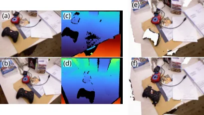
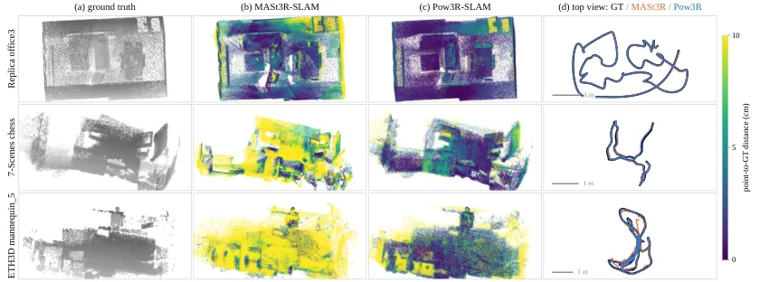

Pow3R-SLAM：把传感器深度当作两视图点图网络先验的实时 RGB-D SLAM
Pow3R-SLAM: Real-Time RGB-D SLAM with 3D Reconstruction Priors
首个把传感器深度作为两视图点图网络先验的 RGB-D SLAM：深度在条件化、度量尺度、后端锚定三处可分离进入；24 序列上比 MASt3R-SLAM 快 1.6×、关键帧 ATE 低 15%、无尺度逐帧误差低 3.1×、Chamfer 低 30%，混合 ICP 变体 25.3 FPS。
ATE
speedup
FPS
Chamfer
作者、单位与技术谱系 · Research context
作者与单位
研究脉络
- MASt3R-SLAM（Murai, Dexheimer, Davison, CVPR 2025）方法基座关系：Pow3R-SLAM 直接扩展 MASt3R-SLAM 的投影匹配与二阶后端，把单目系统改为 RGB-D。[论文第 I、III 节]
- Pow3R（Jang et al., CVPR 2025）上游网络关系：复用 Pow3R 网络作为前端，深度/内参/相对位姿作为其可选条件输入。[论文第 I 节与参考 [6]]
- 本篇推进：深度三处可分离注入 + 回环/置信度重建本篇推进关系：把“深度作为网络先验”拆成 cond/scale/anchor 三个可消融站点，并从 Pow3R encoder/confidence 重建回环检索与逐对应权重。[论文贡献列表]
合作网络
- Toronto Metropolitan University ↔ University College London 跨机构署名Toronto Metropolitan University → University College London关系：共同署名[arXiv 首页署名]
- Pow3R-SLAM 官方项目页论文作者 → ChrisKolios.github.io/Pow3R-SLAM关系：官方项目页（声明接收后开源代码）[项目页]
作者与单位来自论文首页署名；脉络基于论文的引用与自述（属有来源的解读）；未推断导师/师生关系。
方法本质拆解 · What actually changed
是不是微调？
Pow3R 网络权重全程冻结、不训练；作者只重建了免训练的 ASMK 检索头（重估 PCA 白化、把 k-means 码本从 65536 收到 16384），并一次性拟合 1024 节点分位数映射 φ 把 Pow3R 置信度对齐到 MASt3R-SLAM 的匹配置信度分布（109630 个对应、8 条开发序列）。因此系统本质是在既有前馈网络上取的测试时几何与优化后端。
有没有额外约束？
深度在三处作为条件/约束进入：conditioning 把归一化深度与射线图作为网络输入先验；scale 用深度比几何均值给每次前向定一个共享标量把点图变度量；anchor 在后端求解前把关键帧点图深度沿射线替换为传感器值（σ_z^g=0.1）。跟踪端另加一行对数深度残差避免纯旋转退化，并负责观测 Sim(3) 的尺度。
推理/后端到底做了什么？
每帧一次网络前向 + 投影匹配（per-point Levenberg–Marquardt，10 次迭代），Gauss–Newton 最多 50 次迭代求 Sim(3) 相对位姿；每关键帧跑一次二阶全局优化（稀疏 Cholesky、最多 10 次迭代、首帧固定），用 Huber 稳健范数。回环是 ASMK 检索 + 双向 Pow3R解码匹配；hybrid 变体隔帧用点-面 ICP 代替网络，且 ICP 帧永不能成为关键帧。它不是新的全局 BA，而是复用 MASt3R-SLAM 的后端换输入。
方法本质是什么？
本质是把原本只用于几何融合的传感器深度，改为网络的条件输入与优化锚点，从而改变每条点图的不确定性与尺度自由度：深度条件化收紧网络的几何预测（主增益），尺度站点消除无尺度歧义，锚定把传感器精度注入后端，三者合起来让“网络输出即地图”在保住度量与密度的前提下可用。它没有做的是让估计本身更鲁棒——自相似结构仍会导致互相一致但错误的匹配。
输入 RGB-D 对 + 已知内参，改变的位置在前馈网络的三处输入/约束与后端锚定，合并动作为投影匹配 + 二阶全局优化 + 回环，直接效果是更快、更准、更密的度量重建。

动机与问题Motivation
动机与问题
传统 RGB-D SLAM（KinectFusion、ElasticFusion）把深度当作几何融合进地图，于是继承了深度空洞、物体边界不一致等传感器缺陷；而完全丢弃深度的纯视觉方法又失去度量信息。已有两视图重建先验（DUSt3R/MASt3R/Pow3R）把相对几何学得很好，但作者指出没有一个工作研究“把深度作为输入先验”这条路，因此问题变成：能否在保持网络输出即地图的前提下，把可用深度接进来。
方法Method
方法总览
前端每帧对当前帧与关键帧跑一次 Pow3R 前向，条件输入为深度、深度有效掩码与内参；随后做投影匹配、Sim(3) 跟踪，并按匹配覆盖度 ω_k<0.333 决定是否插入关键帧并更新其点图。后端每来一个关键帧跑一次全局二阶优化（复用 MASt3R-SLAM 的公式），回环用 ASMK 检索 + 双向Pow3R 解码匹配，重定位处理跟踪丢失；另有 map-only 关键帧加密地图、hybrid ICP 变体隔帧处理。
关键技术细节
depth 注入分三处：cond 把深度按有效像素均值归一化、与掩码和由内参展开的射线图一起切成 16×16 patch 注入首个 encoder block；scale 用自视点图与传感器深度的逐像素深度比的几何均值（clip 到中位数 0.1–10 倍，至少 50 个有效像素）给整次前向定一个共享标量；anchor 在后端求解前沿已知射线把关键帧点图深度替换成传感器值，作为软约束（σ_z^g=0.1，跟踪端 σ_z^t=10）。由于 Pow3R 没有匹配头，作者用其置信度经 1024 节点分位数映射 φ 重建对应权重，并拟合到 MASt3R-SLAM 匹配置信度的分布上。

实验Experiments
实验设置
评测覆盖四个基准：TUM RGB-D 9 条、7-Scenes 7 条、Replica 8 条合成序列，以及 ETH3D-SLAM 中在任何运行前就已固定的一条 16 序列面板（论文称不可与原文 61 序列 AUC 直接比较）。指标为 Sim(3) 对齐的关键帧 ATE RMSE、无尺度 SE(3) 逐帧误差，以及重建的 accuracy/completion/Chamfer/Chamfer-RMSE；另报墙钟时间与 FPS。对照是直接重跑并复现原文数值的 MASt3R-SLAM，以及 RGB-D 模式、开启回环的 ORB-SLAM3（中位数取 5 次运行），硬件为 Ryzen 5900X + RTX 4090，按协议每隔一帧处理。
实验数字与比较
TUM 上 Pow3R-SLAM 平均 ATE 0.027 m，低于 MASt3R-SLAM 重跑的 0.030 m 与 ORB-SLAM3 的 0.049 m（后者在 3/9 序列丢失跟踪）。7-Scenes 平均 0.044 m，优于 MASt3R-SLAM 0.048 m、ORB-SLAM3 0.055 m。Replica 上 0.009 m 对 MASt3R-SLAM 0.015 m（约一半），但 ORB-SLAM3 在此最优为 0.005 m。无尺度逐帧评分下 0.037 m 对 0.116 m（低 3.1×）。地图质量 15 场景平均 Chamfer 3.1 cm 对 4.3 cm（低 30%），RMSE Chamfer 4.1 cm 对 6.9 cm。运行时间 903 s 对 1443 s（1.6×），hybrid 698 s（2.1×）达 25.3 FPS。ETH3D-SLAM 上 Pow3R-SLAM 未完成 2/16，但中位数更低（0.0135 vs 0.0280 m）。
消融/失败边界
逐个放开组件的消融给出清晰因果链：无先验 L1 平均 0.083 m，加内参 L2 0.071 m，加 cond L3 0.032 m，再加 scale L4 0.026 m，加 anchor L5 0.0257 m；去掉 cond（L6）回到 0.0577 m 且 fr1/rpy 发散，说明深度条件化是主要增益来源，scale 是无尺度误差从 0.364 降到 0.034 m 的关键。深度敏感性：按 max(1+σε,0.05) 加噪，σ=0.05/0.1/0.2/0.4 对应 24 场景均值 0.034/0.056/0.197/0.609 m；但只保留 50/10/3% 有效像素仍为 0.026/0.028/0.026 m——即先验对稀疏深度稳健、对密集错误深度不稳健。
局限与迁移Limitations & Transfer
局限与待核验
作者明确承认深度先验不会让估计更鲁棒：在自相似场景上 Pow3R-SLAM 反而不如 MASt3R-SLAM，包括 7-Scenes 的 stairs（0.044 vs 0.016 m）与 ETH3D 的 planar_3、sofa_2、repetitive，原因是网络给出完整且自信的几何后，匹配会找到互相一致但错误的对应并拉动后端。待核验：置信度映射 φ 的拟合语料与评估面板有 4 条序列重叠（作者称重拟合最多移动 18 mm，属改进），以及 7-Scenes 需把彩色图重采样到深度相机才可比。
与你研究路线的关系
最可直接迁移的是“把传感器测量作为网络的条件输入、而不是把它的缺陷融进地图”这一分工，以及三处可分离注入点的工程拆法；这对我们在退化/稀疏观测下“用可用测量改善问题条件、让网络补空洞”的路线有直接参考。anchor 作为后端软约束、以及用置信度分位数重建权重（避免重训阈值）这两点，都可以在我们自己的因子图或优化后端上做最小 A/B 对照。

